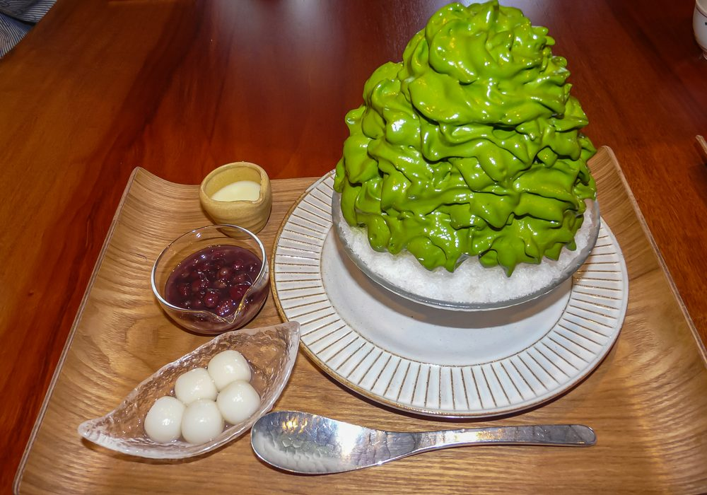
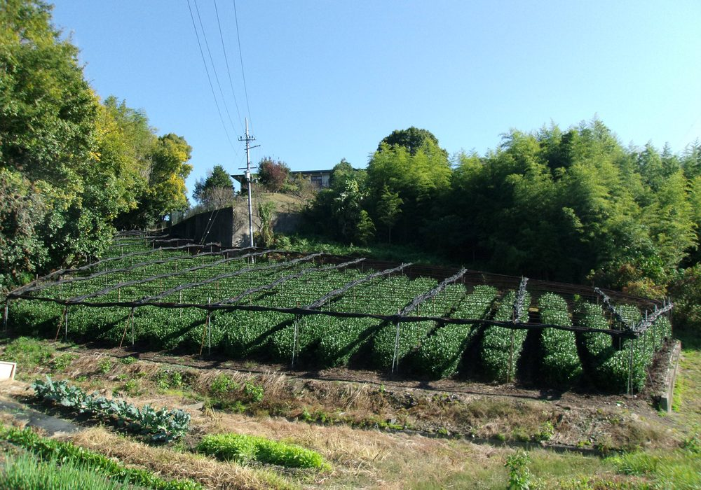
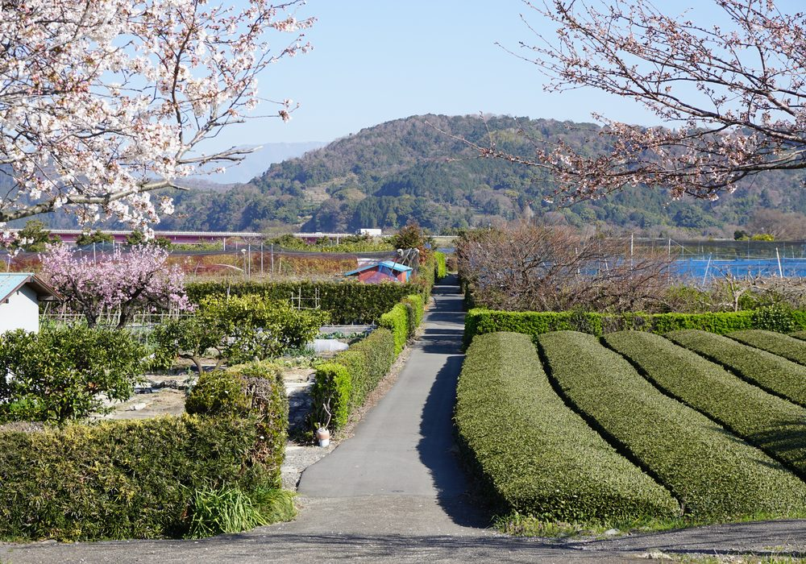
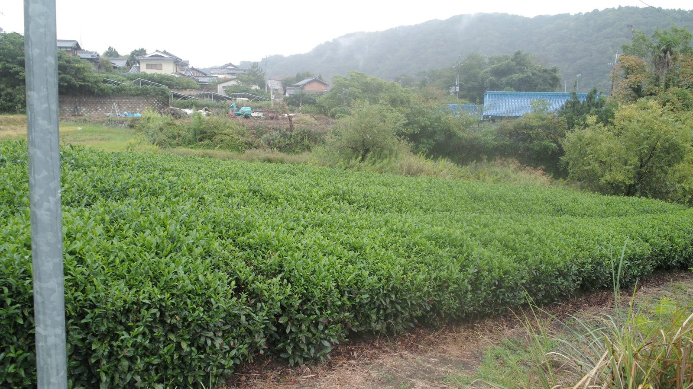

01
01
覆下園での栽培 Shade-Grown Cultivation
摘採前の約20日間、藁や寒冷紗で茶園を覆い日光を遮ります。旨み成分テアニンを豊かに蓄え、 渋みを抑えた深い甘みと鮮やかな緑を生み出します。

The Art of Japanese Matcha
覆下園での栽培から手摘み、石臼挽きまで。荒茶から一貫して手掛ける Japanese Matcha 39 が、 世界のカフェ・製菓・お茶会へ、本物の宇治抹茶をお届けします。
Craftsmanship & Story
1948年、宇治の茶畑から始まった私たちの物語。栽培・摘採・製茶・仕上げ、そして石臼挽きまで。 機械任せにせず、五感で見極める職人の手仕事にこだわり続けています。一杯の抹茶に宿る 香り・旨み・鮮やかな緑は、この一貫体制からしか生まれません。
01
摘採前の約20日間、藁や寒冷紗で茶園を覆い日光を遮ります。旨み成分テアニンを豊かに蓄え、 渋みを抑えた深い甘みと鮮やかな緑を生み出します。
 02
02
最上級の碾茶には、柔らかな新芽「一芯二葉」だけを手摘みで。熟練の摘み手が一枚ずつ見極め、 雑味のない澄んだ味わいの原料を選び抜きます。
 03
03
石臼が一時間に挽けるのはわずか約40g。熱を持たせずゆっくりと挽くことで、 香りと栄養を損なわない、絹のように滑らかな微粉の抹茶に仕上げます。
75+
years of craft
創業からの歩み
40g/h
stone-milling
石臼一台の生産量
30+
countries served
輸出対応国
100%
Uji origin
宇治産茶葉
Grades & Varieties
畑ごと、品種ごとに異なる個性。用途に応じた最適なグレードを、明快な基準でご提案します。
「抹茶の王様」と称される希少品種。とろりとした濃厚な旨みと気品ある余韻。濃茶に最適。
澄んだ鮮緑と均整のとれた味わい。まろやかな甘みと軽やかな香りで、薄茶・飲用に幅広く。
力強い色調とコク。ミルクや加熱に負けない骨格で、ラテ・製菓・加工用途に最適な万能品種。
| グレード / Grade | 用途 / Use | 味わい / Profile | 主な対象 / For | 形態 / Format |
|---|---|---|---|---|
| Ceremonial セレモニアル（お茶会・上級飲用） | 濃茶・薄茶 ストレート飲用 |
濃厚な旨み・上品な甘み・雑味なし | 茶道・高級カフェ ギフト |
20–100g 缶 / 小袋 |
| Cafe / Premium カフェ・プレミアム（ラテ用） | 抹茶ラテ ドリンク・スイーツ |
ミルクに負けないコクと鮮やかな発色 | カフェ・ロースター スイーツ店 |
100g–1kg アルミ袋 |
| Industrial インダストリアル（加工・製菓用） | 製菓・製パン 食品加工・OEM原料 |
安定した品質・力強い色と香り・コスト最適 | メーカー・工場 大量調達 |
1–20kg 大容量・業務用 |

Cafe グレード ×スチームミルク

Industrial グレード ×焼成・冷菓

Ceremonial グレード ×茶筅
Global B2B & Wholesale
OEM製造から大容量卸、オーガニック認証対応まで。安定供給と一貫品質で、 世界中のパートナーのビジネスを支えます。まずはお気軽にサンプルをご請求ください。
御社ブランドの抹茶を、小ロットから。原料選定・ブレンド設計・パッケージまで一貫サポート。
相談する
1kg〜業務用の大容量まで、安定した品質とロットで供給。継続契約・スポット調達の双方に対応。
相談する
JAS有機・USDA Organic・EU Organic に対応した製品ラインをご用意。認証書類の発行も可能です。
相談する
Contact & Sample Request
用途・数量をお知らせいただければ、最適なグレードをご提案いたします。 海外バイヤーの皆様からのお問い合わせも歓迎します（英語対応可）。